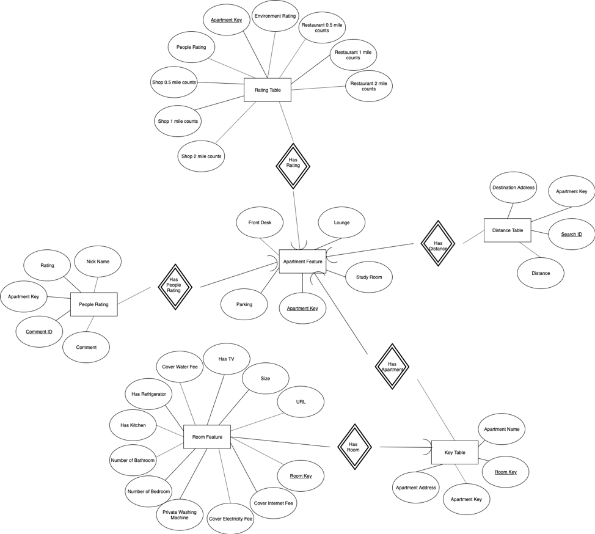
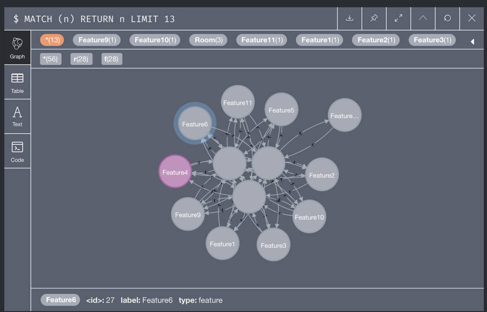

Matcha Smart Housing - A Database Project
University of Illinois at Urbana-Champaign - CS411 - Spring 2019
Introduction and Demo Video:
(If you can't access YouTube, please click here to Youku)
Team Matcha: CS 411 Final Project Report
1. Objective - Problem and Goal
Our group aims to create a website that helps users to find the apartment that best fits their needs efficiently. At this point, our focus in the Urbana-Champaign area and focused on UIUC student renters. Each year, a student would need to look up their next year’s residence, which involves a time-consuming and complex search process. When students are looking for apartments, they consider a variety of factors. One would definitely want to know about the apartment amenities, like the kitchen and gym. Time to commute is also an important factor. Thus, he/she probably wants to know about the distance to his/her work/study locations, grocery shops, restaurants, etc. Finally, they would want the opinion from the apartment’s previous residents. The first kind of information could be found in the leasing office or the apartment management companies’ website. For the second kind of information, google map might be a good option. The last kind of information could only be found by asking around. All in all, that’s already at least 3 different sources for a single apartment. This is what makes the apartment searching difficult and time-consuming. Our objective is to integrate all the information above into one platform to simplify the whole process and optimize their experience on finding an ideal housing for next year.
2. Accomplishments
We have created a relational database that contains the above information. We have moved part of the data to a Neo4j database to better support filter and similarity recommendation functionality. Our databases can be queried and displayed in the front end as a website. Thanks for the REST and React framework, our website can self-adapt to supports both mobile and PC platforms with.
3. Data source
Most of our data is found from the apartment management companies’ websites. The information of the surroundings is automatically generated via google map API. The rest of the information is collected at the leasing office. We also asked our friends to rate and comment on their previous apartments. Most of the data are inputted manually, either by a project member or a friend.
4. ER Design
5. Schema
KeyTable(room_key, apart_name, apart_key);
ApartmentFeature(apart_key, apart_addr, parking, study_room, lounge, front_desk);
RoomFeature(room_key, private_washing_machine, number_of_bedroom, number_of_bathroom, has_kitchen, has_refigerator, has_tv, size, cover_water_fee, cover_electricity_fee, cover_internet_fee, url);
DistanceTable(search_id, apart_key, dest_addr, distance);
RatingTable(apart_key, env_rating, ppl_rating, rest_05_count, rest_1_count, rest_2_count, shop_05_count, shop_1_count, shop_2_count);
PeopleRating(comment_id, apart_key, rating, comment, nick_name);
6. Use of NoSQL
use Neo4j as our NoSQL database in our project. We store all the rooms and features as nodes in the graph database and connect rooms and attributes with edges. We use this graph to implement our AF 2: filtering and recommendation system.
Using Neo4j to implement filtering is much more efficient than using a SQL database to do that. We need to perform lots of joining in a SQL database if we want to check if a room has some specific attributes. Performing join is both memory-consuming and time-consuming. Switching to Neo4j will save time and memory because we can just match if a room node has edges to specific attributes nodes.
Recommendation system can only be implemented by a graph database. We want to find three apartments that share the most attributes with the given apartment. Through finding and counting nodes that are 2 edges away from the given node, we can easily find some alike apartments.
Graph Data Snippet:

7. Relation vs. Non-Relational
Since we are building an apartment information website, we need to store and process basic information in our database. We use a relational database to store these data and implement our basic functions because relational databases are more efficient and convenient than non-relational databases. We can retrieve and show a large number of records in a specific table in a shorter time compared with using non-relational databases. Many convenient applications, like Navicat, can help us maintain the consistency and correctness of our data.
As for some more complicated functions, we choose non-relational database Neo4j to implement. Non-relational databases like Neo4j are more time-efficient and memory-efficient for some specific tasks. One example is recommendation system. Using a relational database to implement this function requires tons of joins and selections, which is both extremely time-consuming and memory-consuming. However, using Neo4j is pretty easy. We only need to traverse all neighbors that are several edges away, count their frequency, and output the top 3. Therefore, instead of using a relational database, we use a non-relational database Neo4j to implement advance function 2.
8. Functionalities and Feature Specs
The first web page we build is the main page with the quick introduction of our team and team members. User can change the web page on the header and login to the admin page.
Admin login: By clicking the admin login on the upright corner of the page, a modal will show up and require two inputs, which are the username and password. If the username and password do not match, an alert will rise. Otherwise, the page will be changed to the admin page.
Insert: We provided insert functions for each table. They require the administrators to input the values and inserts the record by clicking the insert button.
Delete: We provided delete functions for each table. They require the administrators to input the values and deletes the record by clicking the delete button.
Update: We provided update functions for some of the tables. They require the administrators to input the values and updates the record by clicking the update button.
Two fun queries: The first one requires the apartment name and returns the number of rooms that match the apartment name. The second will return a list of apartments that have parking and study room without any input.
The second web page is called the apartment features with mainly three sections, the search section, the filter section, and the result section.
Search: Users can use the search function by inputting the keyword of the apartment and clicking the search button for results. The results will be shown on the result section.
Filter: Users can choose the features of the apartment or room by checkboxes and dropdown buttons in the filter form. By clicking the submit button, the results will be shown on the result section.
Clean filter and search: By clicking the button at the end of the results section, the filtered result or the searched result will be cleared. And the result section will show all of the recorded apartments.
When there are apartments listed on the result section, users can click each of them to change to the information page of the chosen apartment.
Check distance: In the information page, there will be a check distance section, which requires the user to input the address they frequently go, and the result will be shown in a pop-up window.
Comment: Also, on the information page, there will be a comment button. After clicking that button there will be a pop-up window with three required input, rating (0-5), comment, and nickname. By submitting this information, the comment with a unique nickname will be inserted into our people rating table.
Find a similar room: In the information page, each room has a button on the top of the room information section called find a similar room. By clicking that button, the website will automatically find the top 3 apartments with a similar room, and the result will be shown in a pop-up window. Each of these 3 apartments is shown as buttons that can be clicked and jump to the information page of that apartment.
There will be another web page called select for you, which contains a questionnaire with eight checkboxes and three input bars.
Select For you: This function requires eleven input from users as mentioned above. After checking the checkboxes of the questionnaire and typing in three addresses of the place that they frequently go. The web page will change into the result page which contains a list of all apartments that fit the questionnaire with different generated ratings and users can click each of them to go to the information page.
9. Two Basic Functions (Demo)
One of the basic functions we built was the search function, which requires the user to input a keyword string of the apartment. After clicking the search button, the function will automatically return a list of apartments that have included the input string either in the apartment name or apartment address. After getting the list, the result section will list out all of those apartments and can be clicked by the user to access the full information of that specific apartment.
One of the basic functions we built was the update function, which can only access by administrators by logging in to the admin page with their username and password. This function requires the administrator to input the apartment name for searching and all the attributes they want to change. After clicking the update button, the data table of those attributes will be updated.
10. Code
Whole project:
https://github.com/houyuan2/CS411_Project
Major backend functions (include SQL queries):
https://github.com/houyuan2/CS411_Project/blob/master/demo/demosite/views.py
Frontend:
https://github.com/houyuan2/CS411_Project/tree/master/my-app
11. Dataflow
Users are basically interactive with our front-side website built on REST and React. We provide several different interactive methods for users, which are selected to be most user-friendly. Users could click on links/buttons, select favorable attributes, or enter searching key/address on the front-end. After sending a request, the front-end will generate either GET request or POST request (with JSON) to the Django backend. Different functions will deal with the request with Python/MySQL/Neo4j and pack up a JSON with dictionaries and lists back to the front-end. We finally display the information according to users’ habits. For example, we will display the rating by stars★ and data by charts.
12. Advance Function 1 - Matcha Select for You
As mentioned in the project objective, It is really complex and time-consuming to find an ideal apartment. Most housing websites only display the basic information of apartments, which is too far from enough. Those basic information are helpful, but it also causes headache. How could we know if the location is convenient? Which part of apartment features is important to us? A swimming pool in a department is definitely useless for a person who does not even know how to swim.
A student has to spend a lot of time to make a decision on housing. Our goal is to bring student renters a brand new experience in searching for and choosing the apartment. We are students who know students’ demands most; we are real renters who live in the C-U area; we are computer science students who want to apply computing techniques to solve real-life problems. Thus, we gather our power and knowledge of both renting and computing to help more.
Our AF1 is Matcha Smart Rating System. It has 3 major components which can also work individually and in a summary function.
Component 1 – people ratings
Others’ opinions are important. We invite some friends to comment and rate based on their true experience. A SQL trigger and a stored procedure are deployed to help with the SQL database calculate the average rating automatically whenever a comment is added. [Planned but not yet implemented] Some knowledge from CS440 to do NLP on comments so that we could have a smart rate based on the wording. Also, some fake comments by robots could be removed.
Component 2 – location ratings
The location is crucial for apartment selecting. Rather than letting users to “feel” how is the location, we provide some virtualized scores to them with our intelligence. Applying google API, we are able to tell the number of restaurants and stores near the apartment in 0.5/1/2 miles. Also, asking users they frequently visit places, the system calculates the approximate commuting time each day. We not only show these data to users and also standardized scores to them. For instance, an apartment that has a lot of restaurants and stores nearby and is close to Siebel and Grainger library will get a high score for engineering students.
Component 3 – environment ratings
This part of the rating is based on our data on features of apartments and their rooms. Rooms have all convenient utilities that will score higher.
Integration - SELECT for YOU
Putting all fragment scores together, our system shows you the list and ratings “tailor-made” for you. We have a page of a survey asking your preference for apartment related stuff, which comes to be rating weights for different parts of features in the backend. Our smart selector will then follow one’s special requests to find rooms with smart adjustments on scoring and show three components scores above and overall score. This selector greatly solves student renters demand by saving a lot of time on searching. We believe having more users will improve our accuracy in selecting in the future.
Take a female student in the business college as an example. She may need a study room for a group meeting at the apartment; she may not want to share the bathroom with others; she may own a car. According to information, we will increase the rating weights on the study room, private bathroom (2B2B and 4B4B), and parking, so that an apartment with these features will score higher in the environment rating part. Besides, another big scoring composition would be how closely is the apartment to the Business Instructional Facility/College of Business.
All of those ideas come from our own personal experience as students and will be delivered to students’ renters in the C-U area.
13. Technical Difficulty
Implementing the whole AF1 is such a challenging for our team as it is the first time for us to put all the knowledge we learned into practice. Applying google map API is easy, but making it work between frontend and backend/search efficiently is kind of difficult. We spent several times on sending and receiving JSON post request, learned how to make migration on Django, and achieve the ultimate goal with python and database.
A noteworthy technical issue with our AF1 location ratings and Google’s API is that it takes too big and too long on request. As our smart selector in AF1 may have about 200 requests per search per user, it is not practical to request google every time, which is a waste of time and money. We come up with the idea to use the MySQL database as a “cache”. Because students always visit the same place such as the library and lecture hall, it is beneficial to cache the distance between two buildings instead of searching them every time. To finish this, we implement MySQL trigger and logical python code for it. When a request comes, it will first search if there is a record first. If yes, it will return the value of distance directly from database; if no, it will then ask google API for it and store the information into the database.
Also, as mentioned in the AF1 part, we smart score every department for every specific preference. It takes us some time on mathematical methods such as math.log on giving weights to each part of the score smartly and fairly.
Whenever there is a new user rate a specific apartment, the people rating of that apartment needs to be updated accordingly. We initially decided to implement a trigger to automate this process. The trigger does not work in the beginning. After asking on stackoverflow, it turns out, at least in our version of mysql, a trigger cannot update another table directly. We solved this problem by moving the table update query into a stored procedure and make our trigger call the stored procedure. The trigger would pass the apartment_key to the procedure and only update the rating associated.
Achieving our goal on AF1, it is a combination of real data from API, information gathering, caching, and optimization on linear weight fitting.
14. Accordance with The Plan
Besides the fact that we fall behind schedule several times and we change some part of schema and ER design, everything went well according to the development plan and proposed specification. We meet at least 1 time each week and try to conquer technical problems and move forward. Some of the problems are pretty hard so that we have to spend more time than we expected.
15. Labor Division
Front-end: Shuncheng Liu
Back-end:
Hao Yuan: Server environment setup and implementing backend response functions for communicating with frontend and Advance Function 1
Houyuan Sha: implementing SQL queries, triggers and stored procedures and backend framework.
Kuihua Liu: managing NoSQL database and implementing Advance Function 2.
We meet at least 1 time each week. In each meeting, we summarized what we had done and made plans for the next week so that everyone in the group knew what was going on and what we needed to do. Later this semester, we also wrote our code together to make sure our front-end and back-end were connected.